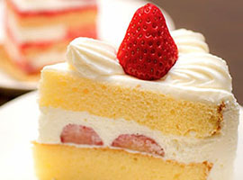

お問い合わせ
当店の商品について質問やご意見については
下記フォームよりお問い合わせください。
また、任意ですがアンケート内容にも協力お願いします。
お問い合わせや感想などは、下記メールフォームよりお願いします。

当店の商品について質問やご意見については
下記フォームよりお問い合わせください。
また、任意ですがアンケート内容にも協力お願いします。
モンブランを主力に伝統の製法を守り、国産の厳選素材だけを使用したスイーツのお店です。 素材のついては季節により最適な産地の素材を使用しています。 今月のお勧めスイーツとパティシエ講座を更新しました。
今月のお勧めスイーツを紹介します。

素材の卵、バター、薄力粉、砂糖は相性のいい北海道産にこだわり作っています。 週末の土日しか販売しない数量限定のスイーツです。
国内産の素材にこだわった定番スイーツを紹介します。
岐阜産の栗を使用した、最も素材にこだわったケーキです。

静岡産の抹茶のマカロンを季節限定で販売しています。

栃木産の鮮度のよい苺を使用したショートケーキです。
今回は家庭で作れるメレンゲ作りを紹介します。